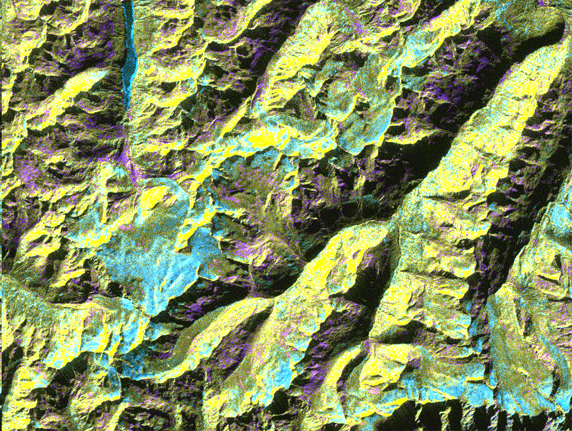

Oetztal, Austria
This is a digital elevation model that was geometrically coded directly
onto an X-band seasonal change image of the Oetztal supersite in Austria.
The image is centered at 46.82 degrees north latitude and 10.79 degrees
east longitude. This image is located in the Central Alps at the border
between Switzerland, Italy and Austria, 50 kilometers (31 miles) southwest
of Innsbruck. It was acquired by the Spaceborne Imaging Radar-C/X-band
Synthetic Aperture aboard the space shuttle Endeavour on April 14, 1994
and on October 5, 1994. It was produced by combining data from these two
different data sets. Data obtained in April is green; data obtained in
October appears in red and blue, and was used as an enhancement based on
the ratio of the two data sets. Areas with a decrease in backscatter from
April to October appear in light blue (cyan), such as the large Gepatschferner
glacier seen at the left of the image center, and most of the other glaciers
in this view. A light blue hue is also visible at the east border of the
dark blue Lake Reschensee at the upper left side. This shows a significant
rise in the water level. Magenta represents areas with an increase of backscatter
from April 10 to October 5. Yellow indicates areas with high radar signal
response during both passes, such as the mountain slopes facing the radar.
Low radar backscatter signals refer to smooth surface (lakes) or radar
grazing areas to radar shadow areas, seen in the southeast slopes. The
area is approximately 29 kilometers by 21 kilometers (18 miles by 13.5
miles). The summit of the main peaks reaches elevations of 3,500 to 3,768
meters (xx feet to xx feet) above sea level. The test site's core area
is the glacier region of Venter Valley, which is one of the most intensively
studied areas for glacier research in the world. Research in Venter Valley
(below center) includes studies of glacier dynamics, glacier-climate regions,
snowpack conditions and glacier hydrology. About 25 percent of the core
test site is covered by glaciers. Corner reflectors are set up for calibration.
Five corner reflectors can be seen on the Gepatschferner and two can be
seen on the Vernagtferner.
P-44756 October 11, 1994
Spaceborne Imaging Radar-C and X-band Synthetic Aperture Radar (SIR-C/X-SAR)
is part of NASA's Mission to Planet Earth. The radars illuminate Earth
with microwaves, allowing detailed observations at any time, regardless
of weather or sunlight conditions. SIR-C/X-SAR uses three microwave wavelengths:
L- band (24 cm), C-band (6 cm) and X-band (3 cm). The multi- frequency
data will be used by the international scientific community to better understand
the global environment and how it is changing. The SIR-C/X-SAR data, complemented
by aircraft and ground studies, will give scientists clearer insights into
those environmental changes which are caused by nature and those changes
which are induced by human activity. SIR-C w as developed by NASA's Jet
Propulsion Laboratory. X-SAR was developed by the Dornier and Alenia Spazio
companies for the German space agency, Deutsche Agentur fuer Raumfahrtangelegenheiten
(DARA), and the Italian space agency, Agenzia Spaziale Italiana (ASI),
with the Deutsche Forschungsanstalt fuer Luft und Raumfahrt e.v.(DLR),
the major partner in science, operations and data processing of X-SAR.